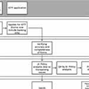
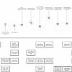
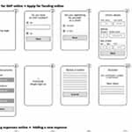
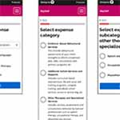
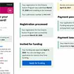
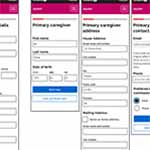

Loading metadata...
To improve their digital delivery, the Ontario Autism Program wanted to create a secure web portal for families. I worked in the discovery and alpha phases as one of two Product Designers, alongside two developers and a lab leader, to create a proof of concept and to prototype some potential features.
Prior to 2019 the Ontario Autism Program offered a needs-based service, where therapy was funded in full. Funding was given to service providers who in turn kept waitlists. In 2019, as an attempt to reduce wait times, the existing program was replaced with an interim one-time funding program where a fixed amount was delivered to a family based on factors such as age, while the government worked to develop a new needs-based program.
Throughout the numerous stakeholder interviews we conducted, we saw different user cohorts emerge based on when families and individuals registered for the OAP. We then created a series of service blueprints (One example show in Fig 1.) to better understand the different in journeys, interactions with the OAP, and the processes that happened backstage to support the user.
| * | Title | Size (bytes) | View |
|---|---|---|---|
|  | Fig. 1 – Service blueprint | Loading... | Load image |
We interviewed nine individuals, making sure to include a range of different regions in Ontario, languages, degrees of access to technology, etc. Through this, this we learned more about some commonly brought up pain points before workshopping with project managers and program analysts from the OAP to create early personas and journey maps that were updated as we validated any assumptions.
As was expected, many of the most brought up pain points, despite being incredibly valid stressors, were about the program design itself. When it came to the pain points we could meaningfully address while creating a digital product, we narrowed them down to three main issues:
The journey map(s) we created were a living breathing document that was updated as the engagement progressed and we learned more about the program and applicants (Fig 2.).
| * | Title | Size (bytes) | View |
|---|---|---|---|
|  | Fig. 2 – Journey map | Loading... | Load image |
Throughout the process of creating determining what features to dive deeper into we worked closely with internal stakeholders to make sure we were consistently assessing the feasibility of our ideas and to keep everyone in the loop. This involved holding participatory workshops where we asked stakeholders to envision the flows themselves, as well as daily check-ins and biweekly presentations.
We had to decide on what features we would design for immediately, and what features we wanted to recommend for a future state portal. The features and flows (Fig 3.) we ended up focusing on were:
| * | Title | Size (bytes) | View |
|---|---|---|---|
|  | Fig. 3 – User flow | Loading... | Load image |
Once the preliminary flows had been created we set out to design an interface that allowed for content to de displayed in the most easily understandable way possible. We continued to tweak our UI and content throughout testing sessions with users, and ultimately had over five different iterations for the interface.
Clarifying expense categories (Fig 4.): Much of our users' confusion surrounding the expense form came from the ambiguity of the expense category/subcategory names. We ran through a few iterations of how we could most clearly display categories before deciding on very explicitly describing each category.
Dashboard notices (Fig 5.): Through our interviews, we learned that questions related status of application and other milestones/important dates were abundant. Having different notices depending on where the user is in the process of acquiring funding to keep them in the loop proved to be a hit during our testing sessions.
Breaking down pages (Fig 6.): User's did not enjoy forms that took up multiple page heights and required too much scrolling. We found that breaking down pages into well defined and brief sections resulted in an overall more pleasant experience during user testing.
| * | Title | Size (bytes) | View |
|---|---|---|---|
|  | Fig. 4 – Expense categories | Loading... | Load image |
|  | Fig. 5 – Dashboard states | Loading... | Load image |
|  | Fig. 6 – Paginated forms | Loading... | Load image |
As we went through three rounds of iterative user testing we constantly made changes to our mockups before they were further developed into prototypes by the developers on our team. While we prototyped numerous flows, those we most rigorously tested and turned into coded prototypes were: